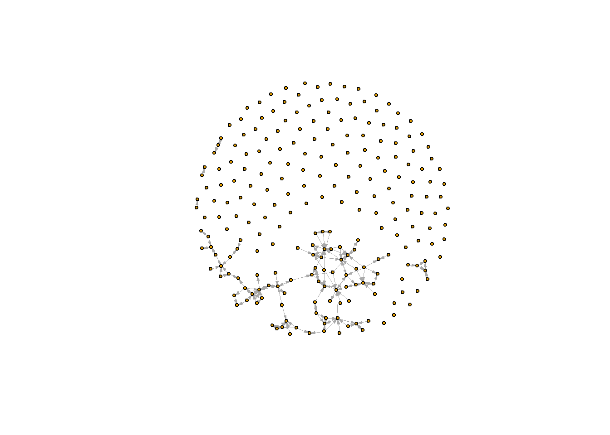
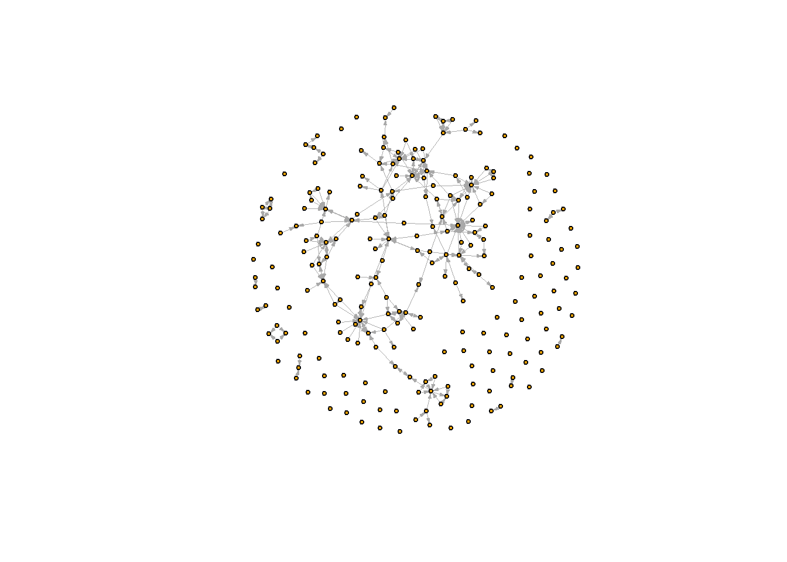

Data preparation
by: Frida van Teijlingen
1 Set up
rm(list = ls())
#---- Loading packages ----
fpackage.check <- function(packages) {
lapply(packages, FUN = function(x) {
if (!require(x, character.only = TRUE)) {
install.packages(x, dependencies = TRUE)
library(x, character.only = TRUE)
}
})
}
#---- Data saving ----
fsave <- function(x, file = NULL, location = "./data/processed/") {
ifelse(!dir.exists("data"), dir.create("data"), FALSE)
ifelse(!dir.exists("data/processed"), dir.create("data/processed"), FALSE)
if (is.null(file))
file = deparse(substitute(x))
datename <- substr(gsub("[:-]", "", Sys.time()), 1, 8)
totalname <- paste(location, file, "_", datename, ".rda", sep = "")
save(x, file = totalname) #need to fix if file is reloaded as input name, not as x.
}
#---- Loading in data ----
fload <- function(filename) {
load(filename)
get(ls()[ls() != "filename"])
}
#---- Output ----
fshowdf <- function(x, ...) {
knitr::kable(x, digits = 2, "html", ...) %>%
kableExtra::kable_styling(bootstrap_options = c("striped", "hover")) %>%
kableExtra::scroll_box(width = "100%", height = "300px")
}
#---- Network data function ----
fcolnet <- function(data = scholars, university = "RU", discipline = "sociology", waves = list(c(2015,
2018), c(2019, 2023)), type = c("first")) {
# step 1
demographics <- do.call(rbind.data.frame, data$demographics)
demographics <- demographics %>%
mutate(Universiteit1.22 = replace(Universiteit1.22, is.na(Universiteit1.22), ""), Universiteit2.22 = replace(Universiteit2.22,
is.na(Universiteit2.22), ""), Universiteit1.24 = replace(Universiteit1.24, is.na(Universiteit1.24),
""), Universiteit2.24 = replace(Universiteit2.24, is.na(Universiteit2.24), ""), discipline.22 = replace(discipline.22,
is.na(discipline.22), ""), discipline.24 = replace(discipline.24, is.na(discipline.24), ""))
sample <- which((demographics$Universiteit1.22 %in% university | demographics$Universiteit2.22 %in%
university | demographics$Universiteit1.24 %in% university | demographics$Universiteit2.24 %in%
university) & (demographics$discipline.22 %in% discipline | demographics$discipline.24 %in% discipline))
demographics_soc <- demographics[sample, ]
scholars_sel <- lapply(scholars, "[", sample)
# step 2
ids <- demographics_soc$au_id
nwaves <- length(waves)
nets <- array(0, dim = c(nwaves, length(ids), length(ids)), dimnames = list(wave = 1:nwaves, ids,
ids))
dimnames(nets)
# step 3
df_works <- tibble(works_id = unlist(lapply(scholars_sel$work, function(l) l$id)), works_author = unlist(lapply(scholars_sel$work,
function(l) l$author), recursive = FALSE), works_year = unlist(lapply(scholars_sel$work, function(l) l$publication_year),
recursive = FALSE))
df_works <- df_works[!duplicated(df_works), ]
# step 4
if (type == "first") {
for (j in 1:nwaves) {
df_works_w <- df_works[df_works$works_year >= waves[[j]][1] & df_works$works_year <= waves[[j]][2],
]
for (i in 1:nrow(df_works_w)) {
ego <- df_works_w$works_author[i][[1]]$au_id[1]
alters <- df_works_w$works_author[i][[1]]$au_id[-1]
if (sum(ids %in% ego) > 0 & sum(ids %in% alters) > 0) {
nets[j, which(ids %in% ego), which(ids %in% alters)] <- 1
}
}
}
}
if (type == "last") {
for (j in 1:nwaves) {
df_works_w <- df_works[df_works$works_year >= waves[[j]][1] & df_works$works_year <= waves[[j]][2],
]
for (i in 1:nrow(df_works_w)) {
ego <- rev(df_works_w$works_author[i][[1]]$au_id)[1]
alters <- rev(df_works_w$works_author[i][[1]]$au_id)[-1]
if (sum(ids %in% ego) > 0 & sum(ids %in% alters) > 0) {
nets[j, which(ids %in% ego), which(ids %in% alters)] <- 1
}
}
}
}
if (type == "all") {
for (j in 1:nwaves) {
df_works_w <- df_works[df_works$works_year >= waves[[j]][1] & df_works$works_year <= waves[[j]][2],
]
for (i in 1:nrow(df_works_w)) {
egos <- df_works_w$works_author[i][[1]]$au_id
if (sum(ids %in% egos) > 0) {
nets[j, which(ids %in% egos), which(ids %in% egos)] <- 1
}
}
}
}
output <- list()
output$data <- scholars_sel
output$nets <- nets
return(output)
}
#---- Gender scraper -----
gender_scraper.NV <- function(names = "names element", web_page = "https://nvb.meertens.knaw.nl/naam/is/") {
names$first_name <- sapply(strsplit(names$Naam, " "), `[`, 1) # This code should work as a way to extract first names from the ego characteristics dataset
names$male <- NA
names$female <- NA
for (i in 1:nrow(names)) {
# print(names$first_name[i])
web_page <- read_html(paste0("https://nvb.meertens.knaw.nl/naam/is/", names$first_name[i]))
table <- web_page %>%
rvest::html_elements("body") %>%
rvest::html_elements("table") %>%
rvest::html_table()
if (length(table) == 0) {
print(length(table))
names$male[i] <- NA
names$female[i] <- NA
} else {
# print(table) print(table[[1]][[2,3]]) # Check if values for male are coherent and
# accurate print(table[[1]][[6,3]]) # Check if values for female are coherent and
# accurate
names$male[i] <- as.numeric(ifelse(table[[1]][[2, 3]] == "--", 0, table[[1]][[2, 3]])) # Make sure non-occurences are not registered as '--'
names$female[i] <- as.numeric(ifelse(table[[1]][[6, 3]] == "--", 0, table[[1]][[6, 3]])) # Make sure non-occurences are not registered as '--'
}
} # end forloop
names <- names %>%
mutate(perc_female = case_when(is.na(female == TRUE) & is.na(male) == TRUE ~ NA, is.na(female) ==
TRUE ~ 0, is.na(male == TRUE) ~ 1, .default = round((female/(male + female)), 2))) %>%
select(!c(male, female, first_name))
return(names)
} # end function2 Libraries
packages <- c("tidyverse", "scholar", "openalexR", "rvest", "jsonlite")
fpackage.check(packages)## Loading required package: tidyverse## ── Attaching core tidyverse packages ───────────
## ✔ dplyr 1.1.4 ✔ readr 2.1.5
## ✔ forcats 1.0.0 ✔ stringr 1.5.1
## ✔ ggplot2 3.5.1 ✔ tibble 3.2.1
## ✔ lubridate 1.9.3 ✔ tidyr 1.3.1
## ✔ purrr 1.0.2
## ── Conflicts ────────── tidyverse_conflicts() ──
## ✖ dplyr::filter() masks stats::filter()
## ✖ dplyr::lag() masks stats::lag()
## ℹ Use the conflicted package (<http://conflicted.r-lib.org/>) to force all conflicts to become errors
## Loading required package: scholar
##
## Loading required package: openalexR
##
## Thank you for using openalexR!
## To acknowledge our work, please cite the package by calling `citation("openalexR")`.
## To suppress this message, add `openalexR.message = suppressed` to your .Renviron file.
##
## Loading required package: rvest
##
##
## Attaching package: 'rvest'
##
##
## The following object is masked from 'package:readr':
##
## guess_encoding
##
##
## Loading required package: jsonlite
##
##
## Attaching package: 'jsonlite'
##
##
## The following object is masked from 'package:purrr':
##
## flatten## [[1]]
## NULL
##
## [[2]]
## NULL
##
## [[3]]
## NULL
##
## [[4]]
## NULL
##
## [[5]]
## NULL# Use multiple functions across libraries
# igraph::triad.census()
# sna::triad.census()3 Loading data
scholars <- fload("./data/scholars_20240924.rda")4 Data selection
4.1 Select sociology departments of Dutch universities: df_allunis
unidata <- fcolnet(data = scholars,
university = c("UU", "RUG", "UvA", "RU"),
discipline = c("sociology"),
waves = list(c(2015, 2019), c(2020, 2024)),
type = c("first"))4.2 Creating df ego characteristics
df_ego <- do.call(rbind.data.frame, unidata$data$demographics)4.3 Creating df works characteristics
df_works <- do.call(rbind.data.frame, unidata$data$works)5 Data preparation
Adding and manipulating variables
5.1 First names for Gender Scraper
x <- data.frame(Naam = df_ego$Naam)
first_name <- sapply(strsplit(x$Naam, " "), `[`, 1) # This code should work as a way to extract first names from the ego characteristics dataset
df_names <- data.frame(x, first_name, male = NA, female = NA) # seem to have worked
head(df_names)## Naam first_name male female
## 1 Ece Arat Ece NA NA
## 2 Marcel Van Assen Marcel NA NA
## 3 Weverthon Barbosa Machado Weverthon NA NA
## 4 Vardan Barsegyan Vardan NA NA
## 5 Anne Brons Anne NA NA
## 6 Vincent Buskens Vincent NA NA# df_names <- df_names[1:5,] # take first elements to try out
#test
i <- 1
df_names$first_name[i]## [1] "Ece"5.2 Adding gender to ego characteristics
# Function at top of document
df_ego <- gender_scraper.NV(names = df_ego, web_page = "https://nvb.meertens.knaw.nl/naam/is/")## [1] 0
## [1] 0
## [1] 0
## [1] 05.3 Gender distribution plotcheck
gendercheck <- df_ego %>%
count(perc_female)
plot(gendercheck$perc_female, gendercheck$n)
6 Network visuals
6.1 Wave 1: 2015-2019
#wave 1
unis_w1 <- igraph::graph_from_adjacency_matrix(
unidata$nets[1,,], #the first wave of data. (thus I select the array of networks and take the first matrix)
mode = c("directed"),
weighted = NULL,
diag = FALSE,
add.colnames = NULL,
add.rownames = NULL
)## Warning in igraph::graph_from_adjacency_matrix(unidata$nets[1, , ], mode =
## c("directed"), : Same attribute for columns and rows, row names are ignoredplot(unis_w1,
vertex.label = NA,
vertex.size = 3,
edge.width = 0.2,
edge.arrow.size =0.2)
6.2 Wave 2: 2020-2024
#wave 2
unis_w2 <- igraph::graph_from_adjacency_matrix(
unidata$nets[2,,], #the second wave of data.
mode = c("directed"),
weighted = NULL,
diag = FALSE,
add.colnames = NULL,
add.rownames = NULL
)## Warning in igraph::graph_from_adjacency_matrix(unidata$nets[2, , ], mode =
## c("directed"), : Same attribute for columns and rows, row names are ignoredplot(unis_w2,
vertex.label = NA,
vertex.size = 3,
edge.width = 0.2,
edge.arrow.size =0.2)
7 Linking travel distance to universities
traveltimetbl <- read_csv2("traveltime_ov.csv")## ℹ Using "','" as decimal and "'.'" as grouping mark. Use `read_delim()` for more control.## Rows: 4 Columns: 4
## ── Column specification ────────────────────────
## Delimiter: ";"
## dbl (4): UU, RUG, UvA, RU
##
## ℹ Use `spec()` to retrieve the full column specification for this data.
## ℹ Specify the column types or set `show_col_types = FALSE` to quiet this message.8 Saving the prepared data
#fsave(df_ego, file = "df_ego", location = "data/processed/")
#fsave(df_works, file = "df_works", location = "data/processed/")
#fsave(unidata, file = "unidata", location = "data/processed/")9 Code for loading in the prepared data
travelt_matrix in w6traveltimes.html
#df_works <- fload("data/processed/df_works_20241009.rda")
#df_ego <- fload("data/processed/df_ego_20241009.rda")
#unidata <- fload("data/processed/unidata_20241009.rda")
#travelt_matrix <- fload("data/processed/travelt_matrix20241009")LS0tDQp0aXRsZTogIkRhdGEgcHJlcGFyYXRpb24iDQphdXRob3I6ICJieTogRnJpZGEgdmFuIFRlaWpsaW5nZW4iDQpiaWJsaW9ncmFwaHk6IHJlZmVyZW5jZXMuYmliDQotLS0NCg0KIyBTZXQgdXANCg0KYGBge3J9DQpybShsaXN0ID0gbHMoKSkNCg0KIy0tLS0gTG9hZGluZyBwYWNrYWdlcyAtLS0tDQpmcGFja2FnZS5jaGVjayA8LSBmdW5jdGlvbihwYWNrYWdlcykgew0KICAgIGxhcHBseShwYWNrYWdlcywgRlVOID0gZnVuY3Rpb24oeCkgew0KICAgICAgICBpZiAoIXJlcXVpcmUoeCwgY2hhcmFjdGVyLm9ubHkgPSBUUlVFKSkgew0KICAgICAgICAgICAgaW5zdGFsbC5wYWNrYWdlcyh4LCBkZXBlbmRlbmNpZXMgPSBUUlVFKQ0KICAgICAgICAgICAgbGlicmFyeSh4LCBjaGFyYWN0ZXIub25seSA9IFRSVUUpDQogICAgICAgIH0NCiAgICB9KQ0KfQ0KDQojLS0tLSBEYXRhIHNhdmluZyAtLS0tDQpmc2F2ZSA8LSBmdW5jdGlvbih4LCBmaWxlID0gTlVMTCwgbG9jYXRpb24gPSAiLi9kYXRhL3Byb2Nlc3NlZC8iKSB7DQogICAgaWZlbHNlKCFkaXIuZXhpc3RzKCJkYXRhIiksIGRpci5jcmVhdGUoImRhdGEiKSwgRkFMU0UpDQogICAgaWZlbHNlKCFkaXIuZXhpc3RzKCJkYXRhL3Byb2Nlc3NlZCIpLCBkaXIuY3JlYXRlKCJkYXRhL3Byb2Nlc3NlZCIpLCBGQUxTRSkNCiAgICBpZiAoaXMubnVsbChmaWxlKSkNCiAgICAgICAgZmlsZSA9IGRlcGFyc2Uoc3Vic3RpdHV0ZSh4KSkNCiAgICBkYXRlbmFtZSA8LSBzdWJzdHIoZ3N1YigiWzotXSIsICIiLCBTeXMudGltZSgpKSwgMSwgOCkNCiAgICB0b3RhbG5hbWUgPC0gcGFzdGUobG9jYXRpb24sIGZpbGUsICJfIiwgZGF0ZW5hbWUsICIucmRhIiwgc2VwID0gIiIpDQogICAgc2F2ZSh4LCBmaWxlID0gdG90YWxuYW1lKSAgI25lZWQgdG8gZml4IGlmIGZpbGUgaXMgcmVsb2FkZWQgYXMgaW5wdXQgbmFtZSwgbm90IGFzIHguIA0KfQ0KDQojLS0tLSBMb2FkaW5nIGluIGRhdGEgLS0tLQ0KZmxvYWQgPC0gZnVuY3Rpb24oZmlsZW5hbWUpIHsNCiAgICBsb2FkKGZpbGVuYW1lKQ0KICAgIGdldChscygpW2xzKCkgIT0gImZpbGVuYW1lIl0pDQp9DQoNCiMtLS0tIE91dHB1dCAtLS0tDQpmc2hvd2RmIDwtIGZ1bmN0aW9uKHgsIC4uLikgew0KICAgIGtuaXRyOjprYWJsZSh4LCBkaWdpdHMgPSAyLCAiaHRtbCIsIC4uLikgJT4lDQogICAgICAgIGthYmxlRXh0cmE6OmthYmxlX3N0eWxpbmcoYm9vdHN0cmFwX29wdGlvbnMgPSBjKCJzdHJpcGVkIiwgImhvdmVyIikpICU+JQ0KICAgICAgICBrYWJsZUV4dHJhOjpzY3JvbGxfYm94KHdpZHRoID0gIjEwMCUiLCBoZWlnaHQgPSAiMzAwcHgiKQ0KfQ0KDQojLS0tLSBOZXR3b3JrIGRhdGEgZnVuY3Rpb24gLS0tLQ0KZmNvbG5ldCA8LSBmdW5jdGlvbihkYXRhID0gc2Nob2xhcnMsIHVuaXZlcnNpdHkgPSAiUlUiLCBkaXNjaXBsaW5lID0gInNvY2lvbG9neSIsIHdhdmVzID0gbGlzdChjKDIwMTUsDQogICAgMjAxOCksIGMoMjAxOSwgMjAyMykpLCB0eXBlID0gYygiZmlyc3QiKSkgew0KDQogICAgIyBzdGVwIDENCiAgICBkZW1vZ3JhcGhpY3MgPC0gZG8uY2FsbChyYmluZC5kYXRhLmZyYW1lLCBkYXRhJGRlbW9ncmFwaGljcykNCiAgICBkZW1vZ3JhcGhpY3MgPC0gZGVtb2dyYXBoaWNzICU+JQ0KICAgICAgICBtdXRhdGUoVW5pdmVyc2l0ZWl0MS4yMiA9IHJlcGxhY2UoVW5pdmVyc2l0ZWl0MS4yMiwgaXMubmEoVW5pdmVyc2l0ZWl0MS4yMiksICIiKSwgVW5pdmVyc2l0ZWl0Mi4yMiA9IHJlcGxhY2UoVW5pdmVyc2l0ZWl0Mi4yMiwNCiAgICAgICAgICAgIGlzLm5hKFVuaXZlcnNpdGVpdDIuMjIpLCAiIiksIFVuaXZlcnNpdGVpdDEuMjQgPSByZXBsYWNlKFVuaXZlcnNpdGVpdDEuMjQsIGlzLm5hKFVuaXZlcnNpdGVpdDEuMjQpLA0KICAgICAgICAgICAgIiIpLCBVbml2ZXJzaXRlaXQyLjI0ID0gcmVwbGFjZShVbml2ZXJzaXRlaXQyLjI0LCBpcy5uYShVbml2ZXJzaXRlaXQyLjI0KSwgIiIpLCBkaXNjaXBsaW5lLjIyID0gcmVwbGFjZShkaXNjaXBsaW5lLjIyLA0KICAgICAgICAgICAgaXMubmEoZGlzY2lwbGluZS4yMiksICIiKSwgZGlzY2lwbGluZS4yNCA9IHJlcGxhY2UoZGlzY2lwbGluZS4yNCwgaXMubmEoZGlzY2lwbGluZS4yNCksICIiKSkNCg0KICAgIHNhbXBsZSA8LSB3aGljaCgoZGVtb2dyYXBoaWNzJFVuaXZlcnNpdGVpdDEuMjIgJWluJSB1bml2ZXJzaXR5IHwgZGVtb2dyYXBoaWNzJFVuaXZlcnNpdGVpdDIuMjIgJWluJQ0KICAgICAgICB1bml2ZXJzaXR5IHwgZGVtb2dyYXBoaWNzJFVuaXZlcnNpdGVpdDEuMjQgJWluJSB1bml2ZXJzaXR5IHwgZGVtb2dyYXBoaWNzJFVuaXZlcnNpdGVpdDIuMjQgJWluJQ0KICAgICAgICB1bml2ZXJzaXR5KSAmIChkZW1vZ3JhcGhpY3MkZGlzY2lwbGluZS4yMiAlaW4lIGRpc2NpcGxpbmUgfCBkZW1vZ3JhcGhpY3MkZGlzY2lwbGluZS4yNCAlaW4lIGRpc2NpcGxpbmUpKQ0KDQogICAgZGVtb2dyYXBoaWNzX3NvYyA8LSBkZW1vZ3JhcGhpY3Nbc2FtcGxlLCBdDQogICAgc2Nob2xhcnNfc2VsIDwtIGxhcHBseShzY2hvbGFycywgIlsiLCBzYW1wbGUpDQoNCiAgICAjIHN0ZXAgMg0KICAgIGlkcyA8LSBkZW1vZ3JhcGhpY3Nfc29jJGF1X2lkDQogICAgbndhdmVzIDwtIGxlbmd0aCh3YXZlcykNCiAgICBuZXRzIDwtIGFycmF5KDAsIGRpbSA9IGMobndhdmVzLCBsZW5ndGgoaWRzKSwgbGVuZ3RoKGlkcykpLCBkaW1uYW1lcyA9IGxpc3Qod2F2ZSA9IDE6bndhdmVzLCBpZHMsDQogICAgICAgIGlkcykpDQogICAgZGltbmFtZXMobmV0cykNCg0KICAgICMgc3RlcCAzDQogICAgZGZfd29ya3MgPC0gdGliYmxlKHdvcmtzX2lkID0gdW5saXN0KGxhcHBseShzY2hvbGFyc19zZWwkd29yaywgZnVuY3Rpb24obCkgbCRpZCkpLCB3b3Jrc19hdXRob3IgPSB1bmxpc3QobGFwcGx5KHNjaG9sYXJzX3NlbCR3b3JrLA0KICAgICAgICBmdW5jdGlvbihsKSBsJGF1dGhvciksIHJlY3Vyc2l2ZSA9IEZBTFNFKSwgd29ya3NfeWVhciA9IHVubGlzdChsYXBwbHkoc2Nob2xhcnNfc2VsJHdvcmssIGZ1bmN0aW9uKGwpIGwkcHVibGljYXRpb25feWVhciksDQogICAgICAgIHJlY3Vyc2l2ZSA9IEZBTFNFKSkNCg0KICAgIGRmX3dvcmtzIDwtIGRmX3dvcmtzWyFkdXBsaWNhdGVkKGRmX3dvcmtzKSwgXQ0KDQogICAgIyBzdGVwIDQNCiAgICBpZiAodHlwZSA9PSAiZmlyc3QiKSB7DQogICAgICAgIGZvciAoaiBpbiAxOm53YXZlcykgew0KICAgICAgICAgICAgZGZfd29ya3NfdyA8LSBkZl93b3Jrc1tkZl93b3JrcyR3b3Jrc195ZWFyID49IHdhdmVzW1tqXV1bMV0gJiBkZl93b3JrcyR3b3Jrc195ZWFyIDw9IHdhdmVzW1tqXV1bMl0sDQogICAgICAgICAgICAgICAgXQ0KICAgICAgICAgICAgZm9yIChpIGluIDE6bnJvdyhkZl93b3Jrc193KSkgew0KICAgICAgICAgICAgICAgIGVnbyA8LSBkZl93b3Jrc193JHdvcmtzX2F1dGhvcltpXVtbMV1dJGF1X2lkWzFdDQogICAgICAgICAgICAgICAgYWx0ZXJzIDwtIGRmX3dvcmtzX3ckd29ya3NfYXV0aG9yW2ldW1sxXV0kYXVfaWRbLTFdDQogICAgICAgICAgICAgICAgaWYgKHN1bShpZHMgJWluJSBlZ28pID4gMCAmIHN1bShpZHMgJWluJSBhbHRlcnMpID4gMCkgew0KICAgICAgICAgICAgICAgICAgbmV0c1tqLCB3aGljaChpZHMgJWluJSBlZ28pLCB3aGljaChpZHMgJWluJSBhbHRlcnMpXSA8LSAxDQogICAgICAgICAgICAgICAgfQ0KICAgICAgICAgICAgfQ0KICAgICAgICB9DQogICAgfQ0KDQogICAgaWYgKHR5cGUgPT0gImxhc3QiKSB7DQogICAgICAgIGZvciAoaiBpbiAxOm53YXZlcykgew0KICAgICAgICAgICAgZGZfd29ya3NfdyA8LSBkZl93b3Jrc1tkZl93b3JrcyR3b3Jrc195ZWFyID49IHdhdmVzW1tqXV1bMV0gJiBkZl93b3JrcyR3b3Jrc195ZWFyIDw9IHdhdmVzW1tqXV1bMl0sDQogICAgICAgICAgICAgICAgXQ0KICAgICAgICAgICAgZm9yIChpIGluIDE6bnJvdyhkZl93b3Jrc193KSkgew0KICAgICAgICAgICAgICAgIGVnbyA8LSByZXYoZGZfd29ya3NfdyR3b3Jrc19hdXRob3JbaV1bWzFdXSRhdV9pZClbMV0NCiAgICAgICAgICAgICAgICBhbHRlcnMgPC0gcmV2KGRmX3dvcmtzX3ckd29ya3NfYXV0aG9yW2ldW1sxXV0kYXVfaWQpWy0xXQ0KICAgICAgICAgICAgICAgIGlmIChzdW0oaWRzICVpbiUgZWdvKSA+IDAgJiBzdW0oaWRzICVpbiUgYWx0ZXJzKSA+IDApIHsNCiAgICAgICAgICAgICAgICAgIG5ldHNbaiwgd2hpY2goaWRzICVpbiUgZWdvKSwgd2hpY2goaWRzICVpbiUgYWx0ZXJzKV0gPC0gMQ0KICAgICAgICAgICAgICAgIH0NCiAgICAgICAgICAgIH0NCiAgICAgICAgfQ0KICAgIH0NCg0KICAgIGlmICh0eXBlID09ICJhbGwiKSB7DQogICAgICAgIGZvciAoaiBpbiAxOm53YXZlcykgew0KICAgICAgICAgICAgZGZfd29ya3NfdyA8LSBkZl93b3Jrc1tkZl93b3JrcyR3b3Jrc195ZWFyID49IHdhdmVzW1tqXV1bMV0gJiBkZl93b3JrcyR3b3Jrc195ZWFyIDw9IHdhdmVzW1tqXV1bMl0sDQogICAgICAgICAgICAgICAgXQ0KICAgICAgICAgICAgZm9yIChpIGluIDE6bnJvdyhkZl93b3Jrc193KSkgew0KICAgICAgICAgICAgICAgIGVnb3MgPC0gZGZfd29ya3NfdyR3b3Jrc19hdXRob3JbaV1bWzFdXSRhdV9pZA0KICAgICAgICAgICAgICAgIGlmIChzdW0oaWRzICVpbiUgZWdvcykgPiAwKSB7DQogICAgICAgICAgICAgICAgICBuZXRzW2osIHdoaWNoKGlkcyAlaW4lIGVnb3MpLCB3aGljaChpZHMgJWluJSBlZ29zKV0gPC0gMQ0KICAgICAgICAgICAgICAgIH0NCiAgICAgICAgICAgIH0NCiAgICAgICAgfQ0KICAgIH0NCiAgICBvdXRwdXQgPC0gbGlzdCgpDQogICAgb3V0cHV0JGRhdGEgPC0gc2Nob2xhcnNfc2VsDQogICAgb3V0cHV0JG5ldHMgPC0gbmV0cw0KICAgIHJldHVybihvdXRwdXQpDQp9DQoNCg0KIy0tLS0gR2VuZGVyIHNjcmFwZXIgLS0tLS0NCmdlbmRlcl9zY3JhcGVyLk5WIDwtIGZ1bmN0aW9uKG5hbWVzID0gIm5hbWVzIGVsZW1lbnQiLCB3ZWJfcGFnZSA9ICJodHRwczovL252Yi5tZWVydGVucy5rbmF3Lm5sL25hYW0vaXMvIikgew0KDQogICAgbmFtZXMkZmlyc3RfbmFtZSA8LSBzYXBwbHkoc3Ryc3BsaXQobmFtZXMkTmFhbSwgIiAiKSwgYFtgLCAxKSAgIyBUaGlzIGNvZGUgc2hvdWxkIHdvcmsgYXMgYSB3YXkgdG8gZXh0cmFjdCBmaXJzdCBuYW1lcyBmcm9tIHRoZSBlZ28gY2hhcmFjdGVyaXN0aWNzIGRhdGFzZXQNCiAgICBuYW1lcyRtYWxlIDwtIE5BDQogICAgbmFtZXMkZmVtYWxlIDwtIE5BDQoNCiAgICBmb3IgKGkgaW4gMTpucm93KG5hbWVzKSkgew0KDQogICAgICAgICMgcHJpbnQobmFtZXMkZmlyc3RfbmFtZVtpXSkNCg0KICAgICAgICB3ZWJfcGFnZSA8LSByZWFkX2h0bWwocGFzdGUwKCJodHRwczovL252Yi5tZWVydGVucy5rbmF3Lm5sL25hYW0vaXMvIiwgbmFtZXMkZmlyc3RfbmFtZVtpXSkpDQoNCiAgICAgICAgdGFibGUgPC0gd2ViX3BhZ2UgJT4lDQogICAgICAgICAgICBydmVzdDo6aHRtbF9lbGVtZW50cygiYm9keSIpICU+JQ0KICAgICAgICAgICAgcnZlc3Q6Omh0bWxfZWxlbWVudHMoInRhYmxlIikgJT4lDQogICAgICAgICAgICBydmVzdDo6aHRtbF90YWJsZSgpDQoNCiAgICAgICAgaWYgKGxlbmd0aCh0YWJsZSkgPT0gMCkgew0KDQogICAgICAgICAgICBwcmludChsZW5ndGgodGFibGUpKQ0KDQogICAgICAgICAgICBuYW1lcyRtYWxlW2ldIDwtIE5BDQogICAgICAgICAgICBuYW1lcyRmZW1hbGVbaV0gPC0gTkENCg0KICAgICAgICB9IGVsc2Ugew0KDQogICAgICAgICAgICAjIHByaW50KHRhYmxlKSBwcmludCh0YWJsZVtbMV1dW1syLDNdXSkgIyBDaGVjayBpZiB2YWx1ZXMgZm9yIG1hbGUgYXJlIGNvaGVyZW50IGFuZA0KICAgICAgICAgICAgIyBhY2N1cmF0ZSBwcmludCh0YWJsZVtbMV1dW1s2LDNdXSkgIyBDaGVjayBpZiB2YWx1ZXMgZm9yIGZlbWFsZSBhcmUgY29oZXJlbnQgYW5kDQogICAgICAgICAgICAjIGFjY3VyYXRlDQoNCiAgICAgICAgICAgIG5hbWVzJG1hbGVbaV0gPC0gYXMubnVtZXJpYyhpZmVsc2UodGFibGVbWzFdXVtbMiwgM11dID09ICItLSIsIDAsIHRhYmxlW1sxXV1bWzIsIDNdXSkpICAjIE1ha2Ugc3VyZSBub24tb2NjdXJlbmNlcyBhcmUgbm90IHJlZ2lzdGVyZWQgYXMgJy0tJw0KICAgICAgICAgICAgbmFtZXMkZmVtYWxlW2ldIDwtIGFzLm51bWVyaWMoaWZlbHNlKHRhYmxlW1sxXV1bWzYsIDNdXSA9PSAiLS0iLCAwLCB0YWJsZVtbMV1dW1s2LCAzXV0pKSAgIyBNYWtlIHN1cmUgbm9uLW9jY3VyZW5jZXMgYXJlIG5vdCByZWdpc3RlcmVkIGFzICctLScNCg0KICAgICAgICB9DQoNCiAgICB9ICAjIGVuZCBmb3Jsb29wDQoNCiAgICBuYW1lcyA8LSBuYW1lcyAlPiUNCiAgICAgICAgbXV0YXRlKHBlcmNfZmVtYWxlID0gY2FzZV93aGVuKGlzLm5hKGZlbWFsZSA9PSBUUlVFKSAmIGlzLm5hKG1hbGUpID09IFRSVUUgfiBOQSwgaXMubmEoZmVtYWxlKSA9PQ0KICAgICAgICAgICAgVFJVRSB+IDAsIGlzLm5hKG1hbGUgPT0gVFJVRSkgfiAxLCAuZGVmYXVsdCA9IHJvdW5kKChmZW1hbGUvKG1hbGUgKyBmZW1hbGUpKSwgMikpKSAlPiUNCiAgICAgICAgc2VsZWN0KCFjKG1hbGUsIGZlbWFsZSwgZmlyc3RfbmFtZSkpDQoNCiAgICByZXR1cm4obmFtZXMpDQoNCg0KfSAgIyBlbmQgZnVuY3Rpb24NCg0KDQpgYGANCg0KIyBMaWJyYXJpZXMNCg0KYGBge3J9DQpwYWNrYWdlcyA8LSBjKCJ0aWR5dmVyc2UiLCAic2Nob2xhciIsICJvcGVuYWxleFIiLCAicnZlc3QiLCAianNvbmxpdGUiKQ0KZnBhY2thZ2UuY2hlY2socGFja2FnZXMpDQpgYGANCg0KYGBge3J9DQojIFVzZSBtdWx0aXBsZSBmdW5jdGlvbnMgYWNyb3NzIGxpYnJhcmllcw0KIyBpZ3JhcGg6OnRyaWFkLmNlbnN1cygpDQojIHNuYTo6dHJpYWQuY2Vuc3VzKCkNCmBgYA0KDQojIExvYWRpbmcgZGF0YQ0KDQpgYGB7cn0NCnNjaG9sYXJzIDwtIGZsb2FkKCIuL2RhdGEvc2Nob2xhcnNfMjAyNDA5MjQucmRhIikNCmBgYA0KDQojIERhdGEgc2VsZWN0aW9uDQoNCiMjIFNlbGVjdCBzb2Npb2xvZ3kgZGVwYXJ0bWVudHMgb2YgRHV0Y2ggdW5pdmVyc2l0aWVzOiBkZl9hbGx1bmlzDQoNCmBgYHtyfQ0KdW5pZGF0YSA8LSBmY29sbmV0KGRhdGEgPSBzY2hvbGFycywgDQogICAgICAgICAgICAgICAgdW5pdmVyc2l0eSA9IGMoIlVVIiwgIlJVRyIsICJVdkEiLCAiUlUiKSwNCiAgICAgICAgICAgICAgICBkaXNjaXBsaW5lID0gYygic29jaW9sb2d5IiksIA0KICAgICAgICAgICAgICAgIHdhdmVzID0gbGlzdChjKDIwMTUsIDIwMTkpLCBjKDIwMjAsIDIwMjQpKSwgDQogICAgICAgICAgICAgICAgdHlwZSA9IGMoImZpcnN0IikpDQpgYGANCg0KIyMgQ3JlYXRpbmcgZGYgZWdvIGNoYXJhY3RlcmlzdGljcw0KDQpgYGB7cn0NCmRmX2VnbyA8LSBkby5jYWxsKHJiaW5kLmRhdGEuZnJhbWUsIHVuaWRhdGEkZGF0YSRkZW1vZ3JhcGhpY3MpDQpgYGANCg0KIyMgQ3JlYXRpbmcgZGYgd29ya3MgY2hhcmFjdGVyaXN0aWNzDQoNCmBgYHtyfQ0KZGZfd29ya3MgPC0gZG8uY2FsbChyYmluZC5kYXRhLmZyYW1lLCB1bmlkYXRhJGRhdGEkd29ya3MpDQpgYGANCg0KIyBEYXRhIHByZXBhcmF0aW9uDQoNCkFkZGluZyBhbmQgbWFuaXB1bGF0aW5nIHZhcmlhYmxlcw0KDQojIyBGaXJzdCBuYW1lcyBmb3IgR2VuZGVyIFNjcmFwZXINCg0KYGBge3J9DQp4IDwtIGRhdGEuZnJhbWUoTmFhbSA9IGRmX2VnbyROYWFtKQ0KDQpmaXJzdF9uYW1lIDwtIHNhcHBseShzdHJzcGxpdCh4JE5hYW0sICIgIiksIGBbYCwgMSkgICMgVGhpcyBjb2RlIHNob3VsZCB3b3JrIGFzIGEgd2F5IHRvIGV4dHJhY3QgZmlyc3QgbmFtZXMgZnJvbSB0aGUgZWdvIGNoYXJhY3RlcmlzdGljcyBkYXRhc2V0DQoNCg0KDQpkZl9uYW1lcyA8LSBkYXRhLmZyYW1lKHgsIGZpcnN0X25hbWUsIG1hbGUgPSBOQSwgZmVtYWxlID0gTkEpICAjIHNlZW0gdG8gaGF2ZSB3b3JrZWQNCg0KaGVhZChkZl9uYW1lcykNCg0KIyBkZl9uYW1lcyA8LSBkZl9uYW1lc1sxOjUsXSAjIHRha2UgZmlyc3QgZWxlbWVudHMgdG8gdHJ5IG91dA0KDQojdGVzdA0KaSA8LSAxDQpkZl9uYW1lcyRmaXJzdF9uYW1lW2ldDQpgYGANCg0KIyMgQWRkaW5nIGdlbmRlciB0byBlZ28gY2hhcmFjdGVyaXN0aWNzDQoNCmBgYHtyfQ0KIyBGdW5jdGlvbiBhdCB0b3Agb2YgZG9jdW1lbnQNCmRmX2VnbyA8LSBnZW5kZXJfc2NyYXBlci5OVihuYW1lcyA9IGRmX2Vnbywgd2ViX3BhZ2UgPSAiaHR0cHM6Ly9udmIubWVlcnRlbnMua25hdy5ubC9uYWFtL2lzLyIpDQpgYGANCg0KIyMgR2VuZGVyIGRpc3RyaWJ1dGlvbiBwbG90Y2hlY2sNCg0KYGBge3J9DQpnZW5kZXJjaGVjayA8LSBkZl9lZ28gJT4lDQogICAgY291bnQocGVyY19mZW1hbGUpDQoNCnBsb3QoZ2VuZGVyY2hlY2skcGVyY19mZW1hbGUsIGdlbmRlcmNoZWNrJG4pDQpgYGANCg0KIyBOZXR3b3JrIHZpc3VhbHMNCg0KIyMgV2F2ZSAxOiAyMDE1LTIwMTkNCg0KYGBge3J9DQojd2F2ZSAxDQp1bmlzX3cxIDwtIGlncmFwaDo6Z3JhcGhfZnJvbV9hZGphY2VuY3lfbWF0cml4KA0KICB1bmlkYXRhJG5ldHNbMSwsXSwgI3RoZSBmaXJzdCB3YXZlIG9mIGRhdGEuICh0aHVzIEkgc2VsZWN0IHRoZSBhcnJheSBvZiBuZXR3b3JrcyBhbmQgdGFrZSB0aGUgZmlyc3QgbWF0cml4KQ0KICBtb2RlID0gYygiZGlyZWN0ZWQiKSwNCiAgd2VpZ2h0ZWQgPSBOVUxMLA0KICBkaWFnID0gRkFMU0UsDQogIGFkZC5jb2xuYW1lcyA9IE5VTEwsDQogIGFkZC5yb3duYW1lcyA9IE5VTEwNCikNCg0KcGxvdCh1bmlzX3cxLA0KICB2ZXJ0ZXgubGFiZWwgPSBOQSwNCiAgdmVydGV4LnNpemUgPSAzLA0KICBlZGdlLndpZHRoID0gMC4yLA0KICBlZGdlLmFycm93LnNpemUgPTAuMikNCmBgYA0KDQojIyBXYXZlIDI6IDIwMjAtMjAyNA0KDQpgYGB7cn0NCiN3YXZlIDINCnVuaXNfdzIgPC0gaWdyYXBoOjpncmFwaF9mcm9tX2FkamFjZW5jeV9tYXRyaXgoDQogIHVuaWRhdGEkbmV0c1syLCxdLCAjdGhlIHNlY29uZCB3YXZlIG9mIGRhdGEuDQogIG1vZGUgPSBjKCJkaXJlY3RlZCIpLA0KICB3ZWlnaHRlZCA9IE5VTEwsDQogIGRpYWcgPSBGQUxTRSwNCiAgYWRkLmNvbG5hbWVzID0gTlVMTCwNCiAgYWRkLnJvd25hbWVzID0gTlVMTA0KKQ0KDQpwbG90KHVuaXNfdzIsDQogIHZlcnRleC5sYWJlbCA9IE5BLA0KICB2ZXJ0ZXguc2l6ZSA9IDMsDQogIGVkZ2Uud2lkdGggPSAwLjIsDQogIGVkZ2UuYXJyb3cuc2l6ZSA9MC4yKQ0KYGBgDQoNCiMgTGlua2luZyB0cmF2ZWwgZGlzdGFuY2UgdG8gdW5pdmVyc2l0aWVzDQoNCmBgYHtyfQ0KdHJhdmVsdGltZXRibCA8LSByZWFkX2NzdjIoInRyYXZlbHRpbWVfb3YuY3N2IikNCg0KYGBgDQoNCiMgU2F2aW5nIHRoZSBwcmVwYXJlZCBkYXRhDQoNCmBgYHtyfQ0KI2ZzYXZlKGRmX2VnbywgZmlsZSA9ICJkZl9lZ28iLCBsb2NhdGlvbiA9ICJkYXRhL3Byb2Nlc3NlZC8iKQ0KI2ZzYXZlKGRmX3dvcmtzLCBmaWxlID0gImRmX3dvcmtzIiwgbG9jYXRpb24gPSAiZGF0YS9wcm9jZXNzZWQvIikNCiNmc2F2ZSh1bmlkYXRhLCBmaWxlID0gInVuaWRhdGEiLCBsb2NhdGlvbiA9ICJkYXRhL3Byb2Nlc3NlZC8iKQ0KDQoNCmBgYA0KDQojIENvZGUgZm9yIGxvYWRpbmcgaW4gdGhlIHByZXBhcmVkIGRhdGENCg0KdHJhdmVsdF9tYXRyaXggaW4gdzZ0cmF2ZWx0aW1lcy5odG1sDQoNCmBgYHtyfQ0KDQojZGZfd29ya3MgPC0gZmxvYWQoImRhdGEvcHJvY2Vzc2VkL2RmX3dvcmtzXzIwMjQxMDA5LnJkYSIpDQoNCiNkZl9lZ28gPC0gZmxvYWQoImRhdGEvcHJvY2Vzc2VkL2RmX2Vnb18yMDI0MTAwOS5yZGEiKQ0KDQojdW5pZGF0YSA8LSBmbG9hZCgiZGF0YS9wcm9jZXNzZWQvdW5pZGF0YV8yMDI0MTAwOS5yZGEiKQ0KDQojdHJhdmVsdF9tYXRyaXggPC0gZmxvYWQoImRhdGEvcHJvY2Vzc2VkL3RyYXZlbHRfbWF0cml4MjAyNDEwMDkiKQ0KYGBgDQo=